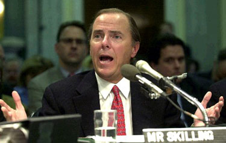
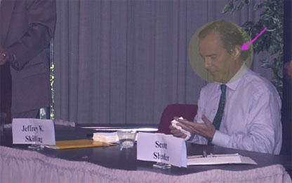

|
Jeffrey Skilling
Jeffery Skilling became the COO of the Enron Corporation in 1990, pushing a strange idea: the company didn't really need any "assets". By pushing the company's aggressive investment strategy, he helped make Enron the nation's biggest wholesaler of gas and electricity, with $27 billion traded in the first quarter. He became the CEO, and personally earned $132 million in a single year. A decade later, he resigned as chief executive, for "personal" reasons. He openly admitted that he was stunned by Enron's horrific descent and by revelations that his former chief financial officer (and right-hand man) made more than $30 million from dealings with investment partnerships barely related to the company. Thousands of employees were left without jobs and retirement savings when Enron imploded in the fall of 2002. As multiple federal investigations loomed, former employees talked of shredding documents related to the collapse. When stories of continued shredding persisted, Enron posted security guards at its offices to stop possible further destruction of documents. Enron's bankruptcy filing was the biggest in U.S. history, encouraging former vice chairman Cliff Baxter to commit suicide. Skilling was described by others as an intense, hands-on manager who let no detail of his sprawling empire escape his reach -- but when it came time to testify for three hours before a cranky House Energy and Commerce Committee, he painted quite a different picture. He portrayed himself as a distant, uninformed figure who had no idea that millions of dollars of debt were being stashed away in off-the-books partnerships. Enron was so big, he claimed, there would be no way he could possibly know about everything going on in the company. "When I left on August 14, I thought the financial reports accurately represented the financial state of the company," he said. "I fervently believed that Enron would continue to be successful in the future -- I did not believe the company was in any imminent financial peril." James Greenwood, subcommittee chairman, said: "Mr Skilling, a massive earthquake struck Enron right after your departure. People in far inferior positions to you could see cracks in the walls, feel the tremors, feel the windows rattling. And you want us to believe that you sat there in your office and had no clue that this place was about to collapse?" Skilling's responses were overarching excuses which included "I was not aware," "I did not believe," "I did not have any knowledge," -- but went well beyond the traditional "I do not recall". At one point he spun a charming anecdote about power outages in a West Palm Beach, Florida hotel, where executives -- including himself -- wandered in and out of the session while colleagues sat in the dark. It was during these "step outs," Skilling mused, that decisions must have been made without his knowledge, specifically those which led to Enron's downfall. It's easy to see how he earned the nickname of The CEO Who Wasn't There. He has since been charged with fraud, insider trading and other crimes -- and posted his $5 million bond with a cashier's check. But people did manage to find Skilling, and share their opinions with him. At the beginning of his speech to the Commonwealth Club of California, a sloppy pie with red cherry filling was heaved at him by an activist. He wiped the pie from his face and head, and as San Francisco police escorted the pie-thrower from the meeting, Skilling began his lecture entitled "The Roles and Responsibilities of the Energy Industry." At 4:00 a.m. on April 9, 2004, New York police officers responding to a complaint that an emotionally disturbed person was "pulling on people's clothes and shouting aloud with intent to annoy" found themselves face to face with none other than the former Enron CEO. Skilling was standing on the corner of Park Avenue and East 73rd Street: highly intoxicated, uncooperative, and making accusations at passers-by. "You're an FBI agent and you're following me," he was reported as shrieking. He ran up to several patrons in a Manhattan bar and "pulled open" their clothes. Police took Skilling to the New York Presbyterian Hospital for observation. |